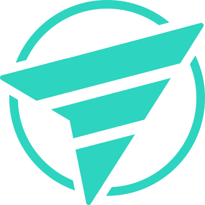
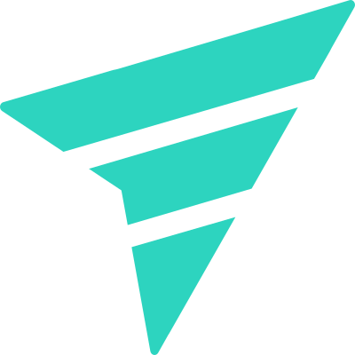

Conceito
A marca nasce da filosofia Forward through technology: tecnologia não como destino, mas como o meio pelo qual ideias, produtos e organizações avançam. O símbolo representa a capacidade de compreender contextos complexos, encontrar uma direção e transformar intenção em movimento.
- →O ponteiro — ação e interação: a forma remete a um ponteiro de mouse, o elemento que seleciona, cria, conecta e transforma intenção em ação no ambiente digital.
- →As letras F e T — autoria e identidade: as iniciais de fael.tech estão incorporadas à construção do símbolo, podendo também ser lidas como Forward Through Technology.
- →A nave — exploração e inovação: o símbolo pode ser percebido como uma nave atravessando uma órbita, representando curiosidade e disposição para explorar novas possibilidades.
- →A trajetória ascendente — progresso: a orientação para a frente e para cima comunica evolução, ambição e construção de resultados — sem apontar para um destino fixo.
- →O círculo — contexto e órbita: representa o ambiente em que a tecnologia opera (produtos, organizações, pessoas, sistemas). Quando o símbolo atravessa esse campo, comunica transformação.
- →Símbolo sem círculo — ação em curso: mais direto e dinâmico, usado quando o contexto já é fornecido pelo wordmark.
Essência da marca
Três ideias centrais estruturam a fael.tech:
Tecnologia precisa estar conectada a uma intenção — compreender o problema e o resultado desejado antes de construir.
Conhecimento precisa gerar movimento — estratégia, arquitetura, design e engenharia transformando ideias em algo concreto.
Movimento tecnológico só tem valor quando produz transformação real — melhores produtos, organizações e experiências.
Assinatura secundária, usada em apresentações e conteúdos institucionais: Direction. Motion. Impact.
Símbolo




Construção
Duas composições do mesmo ponteiro (grade 400×400): com círculo, para usos autônomos e verticais — o símbolo cruzando sua órbita — e sem círculo, mais leve, para acompanhar o wordmark nos lockups horizontais. A geometria é toda em planos retos e ângulos precisos. Sem gradientes, sem contornos, sem sombras.
{kind=link}
{kind=link}
{kind=link}
{kind=link}
{kind=link}
Lockups
fael.tech
Forward through technology
Área de proteção
Mantenha ao redor do lockup um espaço livre igual à metade da altura do símbolo em todos os lados. Nada entra nessa área — texto, bordas ou outros logos.
Ícone e favicon
96px
{kind=link}
{kind=link}
Cores
A paleta evolui de duas cores de marca para uma escala teal de profundidade — da base mais escura da trajetória (900) ao detalhe luminoso (100). O 700 continua sendo a cor da marca em fundos claros; o 300, em fundos escuros.
Neutros
Uma cor de marca por aplicação. O símbolo é sempre chapado — gradientes e transparência pertencem às superfícies (seção 06), nunca à marca em si.
Liquid glass — o ambiente por onde o símbolo atravessa
Na identidade digital, a camada liquid glass representa o ambiente tecnológico em constante mudança: ferramentas, tendências, interfaces e plataformas que se transformam continuamente — superfícies translúcidas, desfocadas e levemente tingidas de teal (painéis, docks, overlays, cards flutuantes). O símbolo nunca é de vidro: ele atravessa o ambiente, mas permanece sólido e nítido. O ambiente muda. A direção permanece clara.
--ft-depth-bg) — o único gradiente da identidade, sempre atrás do vidro..ft-glass; o desfoque revela o conteúdo por trás.Regras do vidro
- →Símbolo sólido, campo translúcido — vidro só em contêineres e superfícies; o ponteiro e o wordmark nunca recebem transparência ou desfoque.
- →Tingimento teal sutil — o vidro carrega
--ft-glass-tint(teal a 12%); nunca vidro cinza neutro nem colorido de outra família. - →Um nível de vidro por composição — sem vidro sobre vidro; a hierarquia vem do conteúdo, não do empilhamento de camadas.
- →Contraste garantido — texto sobre vidro segue os mesmos mínimos de legibilidade (tinta sobre claro, papel/teal 100 sobre escuro).
- →Impresso é sólido — liquid glass é um comportamento de tela; em papel, use as versões chapadas da seção 03.
Tipografia
.tech em teal
Usos incorretos
Assets do kit
Lockup em HTML — copie e cole
Para a especificação completa e imprimível, consulte o manual de identidade visual original.